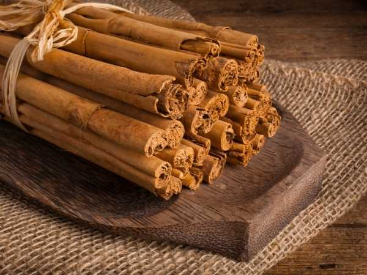

Cinnamomum verum
Common Names: Cinnamon, True Cinnamon, Ceylon Cinnamon
Local Name: Pattai (Tamil), Dalchini (Hindi)
Family: Lauraceae
Origin: Sri Lanka
Plant Type: Evergreen tree, 10–15 m tall
| Trunk: | Pale brown, rough outer bark; the commercially valuable inner bark is smooth, light reddish-brown, and highly aromatic. Trees are coppiced to produce multiple shoots. |
| Leaves: | Opposite, ovate-elliptic, 7–18 cm long, with three prominent veins. Young leaves are bright red-pink, maturing to dark glossy green. Aromatic when crushed. |
| Flowers: | Small, yellowish-white flowers in loose terminal and axillary panicles, 10–15 cm long. Flowers have a mildly unpleasant odor and are insect-pollinated. |
| Fruit: | Dark purple ovoid drupe, about 1.5 cm long, containing a single seed. Fruit pulp is fleshy and eaten by birds which disperse the seeds. |
| Bark: | The inner bark is the spice — it curls into quills when dried. True cinnamon quills are thin, delicate, and multi-layered, distinguishing them from thicker cassia bark. |
| Climate: | Tropical; requires warm, humid conditions with no frost. USDA zones 10–12. |
| Temperature: | 20–30 °C; optimal growth at 27 °C. Cannot tolerate temperatures below 10 °C. |
| Rainfall: | 1,250–2,500 mm annually, well-distributed. A short dry spell before harvest improves bark quality. |
| Altitude: | Sea level to 500 m; best quality bark produced in lowland areas of Sri Lanka's wet zone. |
| Soil: | Sandy or laterite soils with good drainage and pH 4.5–5.5. Thrives in poor, acidic soils where other crops struggle. |
| Sunlight: | Full sun to partial shade; shade-tolerant when young. Coppiced plantations are often intercropped with coconut palms. |
| Propagation: | Seeds (sown fresh, germinate in 15–20 days), vegetative cuttings, or air-layering. Seeds lose viability quickly once removed from fruit. |
| Spacing: | 3 × 3 m for coppiced plantations; wider spacing (6 × 6 m) if grown as full trees. |
| Watering: | Regular watering during dry periods; established trees are moderately drought-tolerant but bark quality suffers under water stress. |
| Fertilization: | Apply NPK (10:10:5) at 60 g per plant in the first year, increasing annually. Green manuring and organic mulch improve soil health. |
| Harvesting: | First harvest 3–4 years after planting. Stems are cut close to ground during the wet season when bark peels easily. Bark is scraped, inner bark stripped, and dried into quills. |
| Pests & Diseases: | Cinnamon butterfly (Chilasa clytia) larvae feed on leaves; leaf spot disease; grey blight caused by Pestalotia cinnamomi. Stripe canker is a serious bark disease. |
| Flowering Season: | January–March in Sri Lanka; flowers appear on mature unpruned trees or on coppice shoots left unharvested. |
| Pollination: | Insect-pollinated, primarily by small flies and beetles attracted to the flowers. |
| Fruit Maturity: | Fruits ripen 6 months after flowering, turning from green to dark purple-black when mature. |
| Seed Viability: | Seeds are recalcitrant — they cannot be dried or stored and must be sown within days of extraction from the fruit. |
| Spice Trade: | Sri Lanka produces 80–90% of the world's true cinnamon. It is one of the most expensive spices, commanding premium prices over cassia. |
| Essential Oil: | Bark oil (cinnamaldehyde 65–75%) and leaf oil (eugenol 70–95%) are distinct products with different chemical profiles and uses. |
| Culinary Use: | Used worldwide in both sweet and savory dishes — desserts, curries, rice dishes, beverages, and spice blends like garam masala and ras el hanout. |
| Grading: | Sri Lankan cinnamon is graded by quill diameter: Alba (finest, 6 mm), Continental, Mexican, and Hamburg grades in decreasing quality. |
| Ancient Trade: | One of the oldest known spices — mentioned in Chinese writings from 2700 BCE and in Egyptian papyri. Used in embalming by ancient Egyptians. |
| Colonial History: | Control of the cinnamon trade drove Portuguese, Dutch, and British colonization of Sri Lanka (Ceylon) from the 16th to 19th centuries. |
| Religious Use: | Mentioned in the Bible as an ingredient in holy anointing oil. Used in Hindu temple rituals and Ayurvedic preparations for centuries. |
| Blood Sugar: | Clinical studies show cinnamon may improve insulin sensitivity and help regulate blood glucose levels in type 2 diabetes patients. |
| Antimicrobial: | Cinnamaldehyde has potent antibacterial and antifungal properties; effective against Candida, E. coli, and Staphylococcus species. |
| Cardiovascular: | May help reduce LDL cholesterol and triglycerides. True cinnamon (C. verum) has negligible coumarin compared to cassia, making it safer for regular consumption. |
| Ayurvedic Use: | Classified as warming (ushna) in Ayurveda; used to treat colds, coughs, digestive disorders, and to improve circulation. |
Add your field observations here.